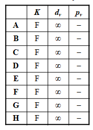
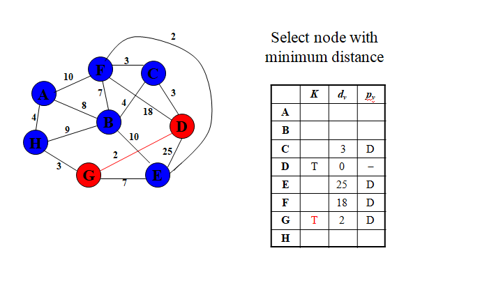
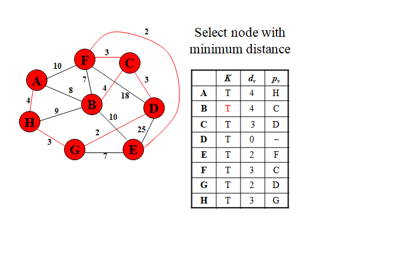
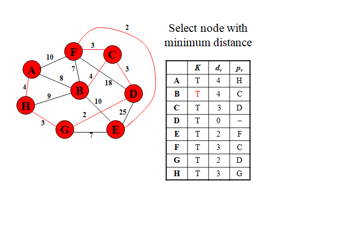
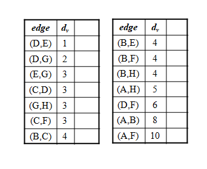
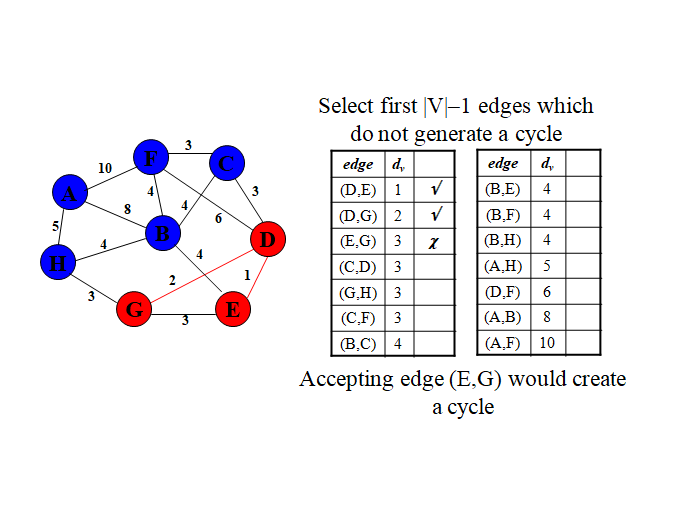
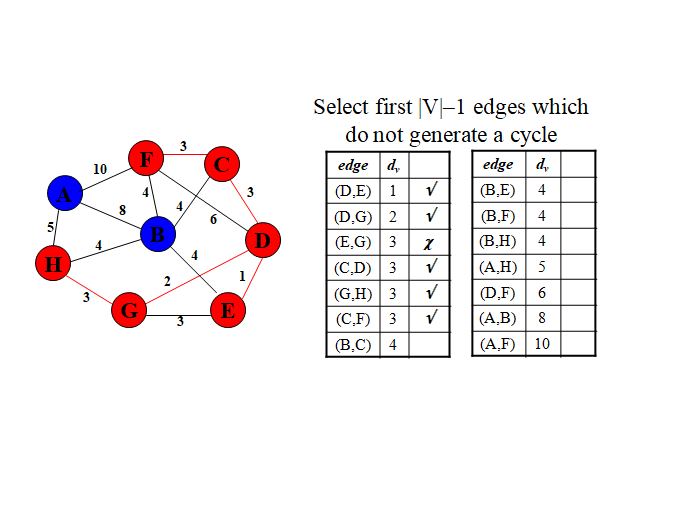

5.2 Minimum Spanning Tree
- A minimum spanning tree of an undirected graph G is a tree formed from graph edges that connects all the vertices of G at lowest total cost.
- A minimum spanning tree exists if and only if G is connected.
- Number of edges in the minimum spanning tree is |V| - 1.
- Minimum spanning tree is a tree because it is acyclic.
- It is spanning because it covers every edge, and it is minimum for the obvious reason.
- Application : wiring a house with a minimum of cable, cable TC connection with minimum cable.
MST - Algorithms
Problem Statement :
- Let G=(V,E) be a connected, undirected graph.
- For each edge (u, v) in E, we have a weight Cu,v specifying the cost (length of edge) to connect u and v.
- We wish to find an acyclic subset T of E that connects all of the vertices in V and whose total weight is minimized.
- Two Algorithms for construction of MST
- Prim's Algorithm
- Kruskals's Algorithm
5.2.1 Prim's Algorithm
- Initially discovered in 1930 by Vojtěch Jarník, then rediscovered in 1957 by Robert C. Prim
- Steps
- Start by picking any node within the graph and include it in the tree.
- At each stage, a new vertex v is to be added to the tree by choosing the edge (u, v) such that the cost of (u, v) is the smallest among all edges. Here u is in the tree and v is not.
- If the tree does not contain all vertices in the graph, repeat step 2.
Prim's Algorithm - Detailed Steps
- Pick any vertex r to be a root and let it be current vertex.
- Set dr = 0, pr = null , known = True
// d - shortest distance from so far constructed tree,
//p - previous node
//known indicates that the node is added to MST
- For all other vertices v ϵ V, v ≠r, set dv = ∞ , pv = null, known = False
- For every vertex w adjacent to current vertex 'v' and also unknown, update the weight of the shortest path connecting root to w through v as follows :
dw= min (dw, Cv,w)
where Cv,w is the cost of the edge (v,w).
If minimum is Cv,w update pw = v
- From the unknown vertices, pick the vertex with minimum distance and make it as the current vertex.
- Repeat steps 4 & 5 until all vertices becomes known
Prim's Algorithm - Illustration
Graph

Initialize Array


 


5.2.2 Kruskal's Algorithm
- Created in 1957 by Joseph Kruskal
- Finds the MST by taking the smallest weight in the graph and connecting the two nodes and repeating until all nodes are connected to just one tree
- Works with edges, rather than nodes
- Two steps:
- Sort edges by increasing edge weight
- Select the first |V| - 1 edges that do not generate a cycle
Consider following graph and sort the edges by increasing edge weight in table


